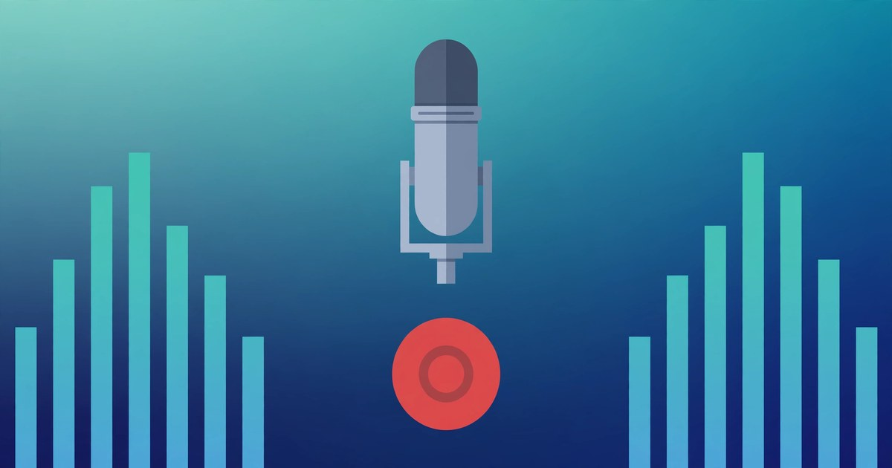

How to Use a Voice Recorder Online
Record your voice in seconds, listen back, and download it — free and private.
November 21, 2026 · 5 min read

You can record your voice online in seconds: open ToolsHub's Voice Recorder, press Start recording, allow microphone access when your browser asks, speak, press Stop, then listen to the playback and download your recording. The file saves as voice-recording.webm (or .mp4 in Safari), and your voice never leaves your device — no signup, no upload, no install.
A voice recorder is the quickest way to catch an idea before it fades: a voice note to yourself, a practice take for a presentation, or a short message you would rather speak than type. A phone app wants an account and a desktop editor wants an install; a browser recorder does the same job with nothing to set up, and because this one runs entirely on your device, the recording is yours from the first second to the download.
What the tool does
The Voice Recorder has one job and five controls: Start recording, Stop, a playback player, Download, and Record again. While you record, a timer counts up and a level bar moves with your microphone input, so you can see whether the mic is hearing you. Press Stop and the player appears with your take, and Download saves it to your device.
- Live timer — counts up in MM:SS from 00:00, past the hour if needed.
- Live level bar — shows your microphone input as you speak. A bar that barely moves means the mic is too far away or too quiet.
- Playback before you save — listen in the built-in player before you decide to keep the take.
- Automatic format — the tool picks the first format your browser supports (webm, then mp4, then ogg), and the download is always named voice-recording plus that extension.
- Private by design — audio is captured and assembled in your browser. Nothing is uploaded, and closing the tab removes the recording.
There is no pause button, no editing, and no time limit — the tool is for quick takes, not for editing a podcast. If a take goes wrong, stop it and try once more.
Record your voice in 5 steps
- Open the Voice Recorder tool. Nothing to install or sign up for — the page is ready as soon as it loads.
- Press Start recording and allow the microphone. Your browser asks for permission the first time; choose Allow. If you press Block by mistake, nothing records until you allow it in the browser's site settings and press Start again.
- Speak — and watch the timer and the level bar. The timer counts up from 00:00 and the bar should dance as you talk; if it stays flat, move closer.
- Press Stop and listen. The tool shows "Recording ready (01:30). Press play to listen, or download it." — press play and check the take sounds right.
- Download it, or press Record again. Download saves voice-recording.webm (or .mp4 in Safari). Record again discards the take and resets the timer to 00:00 — so download first if you want to keep it.
Worked example 1: reading the timer
The timer shows minutes and seconds, and the minutes never roll over into hours. Speak for 90 seconds and it reads 01:30: 90 ÷ 60 is 1 minute with 30 seconds left over. A 2-minute, 5-second take reads 02:05: 125 seconds ÷ 60 is 2 minutes with 5 seconds left over. One hour, one minute and five seconds is 3,665 seconds (3,600 + 60 + 5), and the timer shows 61:05 — 3,665 ÷ 60 is 61 minutes with 5 seconds left over.
Worked example 2: how big is the file?
The tool does not set or show a bitrate, so the exact size depends on your browser and format — but a rough guide helps. If your browser records at about 128 kilobits per second, one minute of voice works out like this: 128,000 bits per second × 60 seconds is 7,680,000 bits, and 7,680,000 ÷ 8 bits per byte is 960,000 bytes — about 0.96 MB, just under one megabyte. So a minute is roughly a megabyte.
Worked example 3: which format will you get?
The tool tries three formats in a fixed order — webm, then mp4, then ogg — and takes the first one your browser supports. The filename always follows the same pattern:
| Browser | Format picked | Downloaded file |
|---|---|---|
| Chrome or Edge | webm | voice-recording.webm |
| Firefox | webm | voice-recording.webm |
| Safari | mp4 | voice-recording.mp4 |
| Older or other browsers | ogg (fallback) | voice-recording.ogg |
All three formats play in modern browsers and most media players. The one thing you will not get is an MP3 — convert the downloaded file afterwards if a service only accepts MP3.
Voice Recorder vs phone app vs desktop editor
The browser recorder is the lightest option — no install, no account, no cloud sync — but it has no editing, so use a desktop editor when a recording needs cutting and polishing.
6 mistakes to avoid when recording your voice
- Denying the microphone, then pressing Start again. Pressing Start again changes nothing — the browser remembers the Block. Allow the microphone in the browser's site settings first, then press Start recording again.
- Recording too far from the microphone. If the level bar barely moves, the recording will be faint — move closer before the real take.
- Starting a new take before downloading the good one. Starting a new take discards the previous one, so download the one you want to keep first.
- Expecting an MP3. The download is webm in Chrome, Edge and Firefox, mp4 in Safari, and ogg as a fallback — convert the file afterwards if you need MP3.
- Closing the tab before downloading. The recording only exists inside the tab — close it and it is gone.
- Skipping a test take in a noisy room. Record five seconds, stop, and listen — background noise is easy to miss while speaking and obvious on playback.
Frequently asked questions
Is my voice uploaded anywhere when I record online?
No. The Voice Recorder runs entirely in your browser: the microphone audio is captured on your device and the recording is assembled there. Nothing is sent to a server, and closing the tab removes the recording.
What format is the voice recording I download?
It depends on your browser: the tool tries webm, then mp4, then ogg, and downloads the first your browser supports — Chrome, Edge and Firefox save voice-recording.webm, Safari usually saves voice-recording.mp4. There is no MP3 option.
How long can I record for?
There is no time limit. The timer counts up in minutes and seconds and keeps going past an hour — after 1 hour, 1 minute and 5 seconds it reads 61:05. Longer recordings simply make larger files, roughly a megabyte a minute.
Why is the level bar flat, or why does the recorder say my microphone was denied?
The browser needs microphone permission first. If you pressed Block, the tool shows "Microphone access was denied" and nothing records until you allow it in site settings and press Start again. If no microphone is found, it says "No microphone was found on this device" — connect one and try again.
Related tools: Text to Speech · Device Info